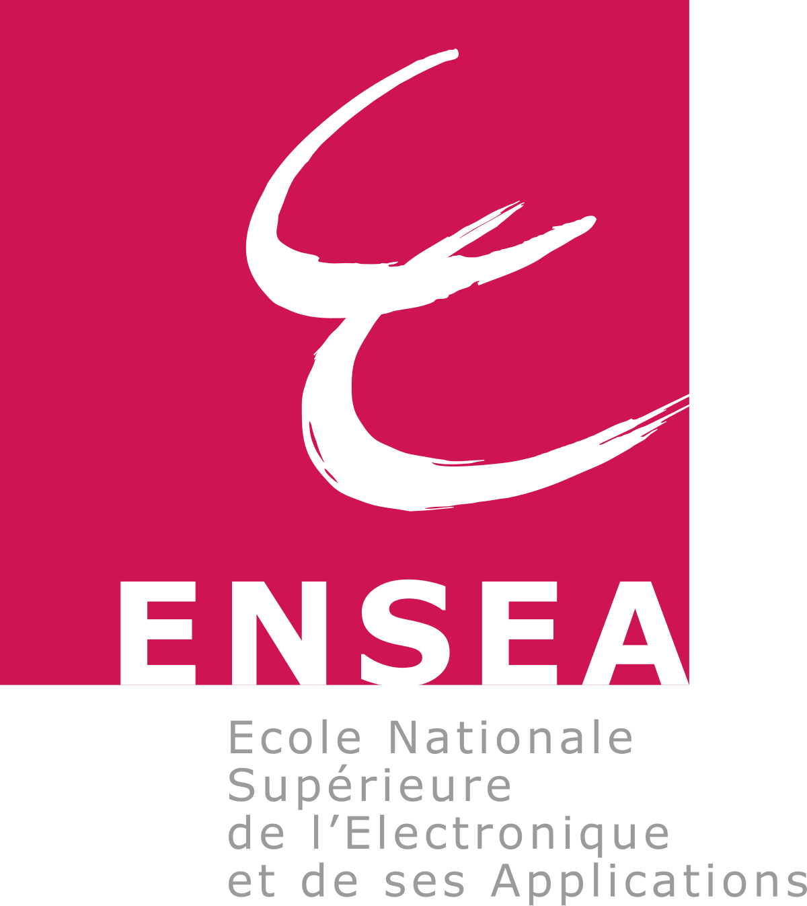

About: I am a master's student in Telecommunication Engineering at Politecnico di Milano, working at the intersection of distributed AI systems and communication networks.
My current research studies how collective communication can adapt when GPU workers are separated by a dynamic wide-area network. I build end-to-end systems with PyTorch FSDP, NCCL/MSCCL, and RoCEv2 RDMA, connecting collective-schedule decisions with multipath traffic steering and network telemetry.
Before graduate research, I worked on carrier-grade gateway forwarding software, developing and validating C/IPsec functionality in a large production codebase. I am interested in internship and research opportunities in AI infrastructure, distributed systems, and high-performance networking.
Research interests: Distributed AI systems, collective communication, high-performance networking, network measurement, wireless communication, and signal processing.
News
- — Submitted our paper on joint CCL re-optimization and WAN re-routing for cross-datacenter training to INET4AI 2026, an ACM CoNEXT workshop.
Research
Publications
Selected Projects
Education
- Politecnico di Milano, Italy — M.Sc. in Telecommunication Engineering
- ENSEA, France — Academic exchange and research projects
- Beijing Institute of Technology, China

Travel
I keep a personal map of places I have visited alongside my academic and engineering work.